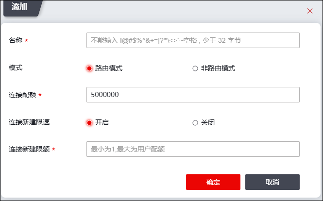

本小节介绍如何创建虚拟系统。
| 步骤1 | 选择 。 |
| 步骤2 | 添加虚拟系统。 |
1）点击“添加”，如下图所示。

在添加虚拟系统时，各项参数的具体说明如下表所示。
参数 |
说明 |
|---|---|
名称 |
必填项，设置虚拟系统的名称；此处中文最大输入长度为10，英文最大输入长度为31。 |
模式 |
选择虚拟系统的工作模式，可选项为路由模式和非路由模式。 1）路由模式：在路由模式下，接口为三层接口，虚拟系统工作在网络层，可配置IPv4或IPv6地址，对不同网段间的数据进行三层路由和转发。配置为路由模式的虚拟系统接口可以工作在路由、交换、虚拟线和监听模式下。 2）非路由模式：在非路由模式下，接口为二层接口，虚拟系统工作在数据链路层。涉及到网络层及以上的功能均不可配置，如邻居、DHCP、静态路由、策略路由等。配置为非路由模式的虚拟系统接口只能工作在交换模式和虚拟线模式，不能配置IP地址。 |
连接配额 |
设置该虚拟系统下的连接配额（即最大并发连接数），使该虚拟系统的最大并发连接数不超过设定值。取值范围：1024-1600000。 说明： 系统的总连接配额由当前系统的license决定，同时也会根据license决定系统最多能添加的虚拟系统个数。 |
连接新建限速 |
设置是否对新建连接进行限速。 |
连接新建限额 |
“连接新建限速”参数设置为“开启”时，显示该参数。 设置该虚拟系统下的最大连接新建速率（即每秒最大新建连接数），虚拟系统的最大新建连接数不能超过设定值。最小值为1，最大值为配置的用户配额。 |
2）点击【确定】按钮完成虚拟系统的创建。
| 步骤3 | 编辑虚拟系统。 |
选中需要编辑的虚拟系统，点击“编辑”，可以对已创建虚拟系统的基本信息进行编辑，并可设置属于该虚拟系统的接口。